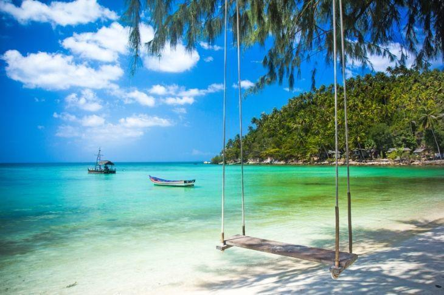
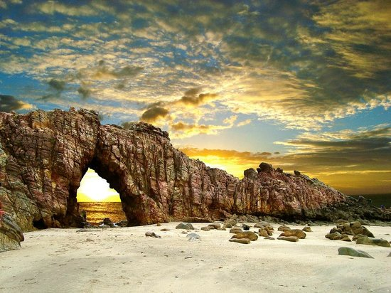

Jericoacoara

Dicas de Jeri Passeios
Há muito o que fazer em , um dos melhores destinos do Ceará e do Brasil!
Praias, dunas, boas pousadas e hotéis, além de um clima maravilhoso atraem cada vez mais turistas.
Nesse post preparamos um apanhado com todas as dicas para planejar sua viagem e aproveitar o que Jericoacoara tem de melhor!